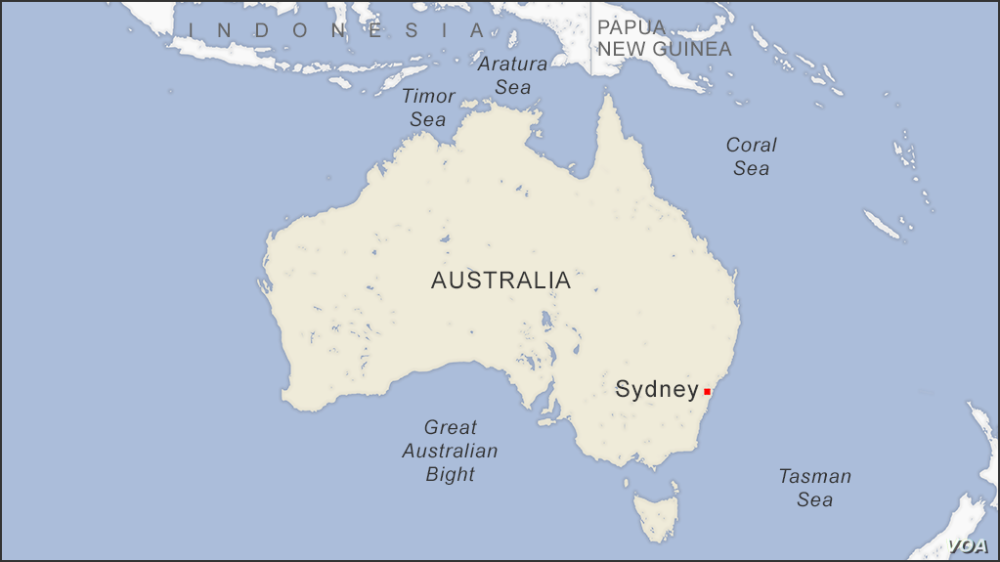

Sydney
Bienvenue dans la capitale officieuse d'Australie
Située au Sud-Est de l'Australie, Sydney en est la plus grande ville.
Construite autour de sa grande baie, Sydney est une ville extrèmement ouverte au tourisme, et offre des activités aux goûts de chacun.

- La Ville
- La ville est avant tout balnéaire, ce qui siginifie des plages immenses, réservées ou publiques,
où l'on peut autant se poser au soleil que s'essayer au surf.
- On trouve également énormément de restaurants et magasins qui vous permetterons de vous essayer à la cuisine locale,
du steak de kangourou aux brochettes de crocodile, en passant par la fameuse Vegemite, l'arme biologie australienne.
- Ses Activités
- Évidement, le monument le plus fameux d'Australie, l'Opéra de Sydney est souvent ouvert au publique pour des visites,
et vous pourrez y écouter des pièces classiques comme des concerts plus modernes de pop ou de métal (La communauté métaleuse de la ville est effrayante,
mais extrèmement sympatique et serviable, et une assez bonne surprise pour les non-connaisseurs).
- Culturellement, la ville offre également de nombreux musées et expositions, qui couvrent tout les domaines, de l'histoire à l'art, de la cuisine à la musique,
et vous trouverez forcément quelquechose qui vous plaira.
- Ailleurs en Australie
- La seconde "Grande" Ville d'Australie en est sa capitale, Melbourne
Vous y découvrirez de nombreuses activités liées à l'histoire du continent, autant du point de vue des colons que des indigènes
-